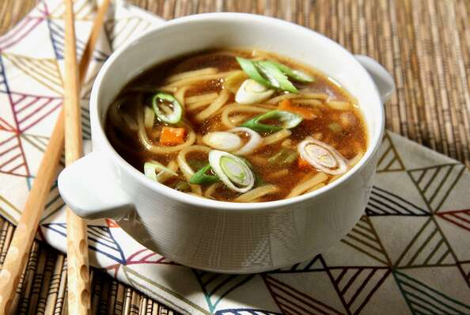

Ramen Noodle Soup

Description
Ingredients
- 1 ¾ cups vegetable broth
- ½ (3.5 ounce) package ramen noodles with dried vegetables
- 1 teaspoons soy sauce
- ¼ teaspoon chili oil
- ¼ teaspoon minced fresh ginger root
- ½ teaspoon sesame oil
- 1 green onions, sliced
Steps
- In a medium saucepan combine broth and noodles.
- Cover and bring to a boil over high heat; stir to break up noodles.
- Reduce heat to medium and add soy sauce, chili oil and ginger. Simmer, uncovered, for 10 minutes.
- Stir in sesame oil and garnish with green onions.